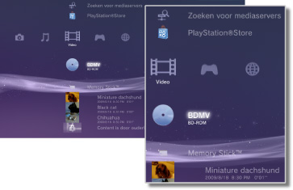

Video > Categorie Video
Categorie Video
De volgende pictogrammen worden getoond onder  (Video). De pictogrammen die worden weergeven, zijn afhankelijk van de gebruikscondities.
(Video). De pictogrammen die worden weergeven, zijn afhankelijk van de gebruikscondities.

 |
BD-Data hulpprogramma | Administratieve gegevens gebruikt door de Blu-ray Disc™ (BD) worden opgeslagen. |
|---|---|---|
 |
Zoeken naar mediaservers | Zoeken naar DLNA-mediaservers die aangesloten zijn op hetzelfde netwerk. |
 |
Mediaserver | Verbinding maken met DLNA-mediaservers en de opgeslagen videobestanden afspelen. Het weergegeven pictogram varieert naargelang het type server. |
 |
Video Editor & Uploader | Hiermee kunt u video-inhoud die opgeslagen is in de systeemopslag van het PS3™-systeem bewerken. |
 |
BD-ROM/BD-R/BD-RE | Een Blu-ray Disc (BD) afspelen. |
 |
DVD-ROM / DVD-R / DVD+R / DVD-RW / DVD+RW | Een DVD of een AVCHD-disc afspelen. |
 |
Datadisc | Videobestanden afspelen die zijn opgeslagen op compatibele, beschrijfbare discmedia zoals een CD-R of DVD-R. |
 |
Memory Stick™ | Videobestanden afspelen die zijn opgeslagen op Memory Stick™-media.* |
 |
SD Memory Card | Videobestanden afspelen die zijn opgeslagen op een SD Memory Card.* |
 |
CompactFlash® | Videobestanden afspelen die zijn opgeslagen op CompactFlash®.* |
 |
PSP™ (PlayStation®Portable) | Videobestanden afspelen die opgeslagen zijn op een Memory Stick™-medium van een PSP™-systeem. |
 |
PSP™ (PlayStation®Portable) | Videobestanden afspelen die opgeslagen zijn in de systeemopslag van het PSP™go-systeem. |
 |
Digitale camera | Videobestanden weergeven die op een digitale camera zijn opgeslagen die compatibel is met het PS3™-systeem. |
 |
WALKMAN® / ATRAC Audio Device(WALKMAN®) | videobestanden afspelen die op een WALKMAN®/ATRAC Audio Device (WALKMAN®) zijn opgeslagen. |
 |
ATRAC Audio Device | videobestanden afspelen die op een ATRAC Audio Device zijn opgeslagen. |
 |
USB-apparaat | Videobestanden afspelen die zijn opgeslagen op een USB-apparaat voor massaopslag. |
 |
Films uit digitale camera | Videobestanden afspelen die in de DCIM-map van het opslagmedium zijn opgeslagen. |
|
(map) | Dit pictogram wordt weergegeven voor mappen die werden aangemaakt op opslagmedia met behulp van een pc. |
 |
(bestanden opgeslagen in de systeemopslag) | Videobestanden afspelen die opgeslagen zijn in de systeemopslag van het PS3™-systeem. Miniatuurafbeeldingen worden weergegeven. |
 |
(data gedownload naar de systeemopslag) | Dit pictogram wordt weergegeven voor videobestanden die naar de systeemopslag zijn gedownload. Bij het starten worden de data geïnstalleerd en kan het videobestand worden afgespeeld. |
| * |
Een geschikte USB-adapter (niet bijgeleverd) is vereist om opslagmedia met bepaalde modellen te gebruiken. In combinatie met een USB-adapter worden opslagmedia weergegeven als |
|---|
 (USB-apparaat).
(USB-apparaat).Opmerkingen
- De verkoop/verhuur van videocontent van de PlayStation®Store op het PS3™-systeem werd stopgezet.
- Meer informatie over DLNA vindt u in deze handleiding onder
 (Instellingen) >
(Instellingen) >  (Netwerkinstellingen) > [Mediaserver verbinding].
(Netwerkinstellingen) > [Mediaserver verbinding]. - Als het systeem inhoud op een Blu-ray Disc die beschermd is door auteursrechten dient af te spelen bij een resolutie van 1080p, moet het systeem worden aangesloten op een apparaat dat compatibel is met de standaard HDCP（High-bandwidth Digital Content Protection） met behulp van een HDMI-kabel.
- Miniatuurafbeeldingen worden mogelijk niet weergegeven voor bepaalde soorten videobestanden met auteursrechtbescherming.
- Bij het afspelen van een BD die inhoud met ouderlijk toezicht bevat, is de weergave beperkt volgens de instellingen van ouderlijk toezicht van het PS3™-systeem. Het niveau van ouderlijk toezicht voor de BD kan worden aangepast onder (Instellingen) >
 (Beveiligingsinstellingen).
(Beveiligingsinstellingen). - Bij het afspelen van een DVD die inhoud bevat met ouderlijk toezicht is mogelijk een wachtwoord vereist om inhoud af te spelen. Het wachtwoord kan worden aangepast onder (Instellingen) > (Beveiligingsinstellingen).
- Inhoud met beperkingen voor ouderlijk toezicht wordt weergegeven als
 . U kunt zulke inhoud afspelen door een viercijferig wachtwoord in te voeren. Het wachtwoord kan worden ingesteld of gewijzigd onder (Instellingen) > (Beveiligingsinstellingen).
. U kunt zulke inhoud afspelen door een viercijferig wachtwoord in te voeren. Het wachtwoord kan worden ingesteld of gewijzigd onder (Instellingen) > (Beveiligingsinstellingen). - Geblokkeerde BD's worden weergegeven als
 . Om inhoud van dergelijke schijven af te spelen, moet u het wachtwoord invoeren dat door de discontwikkelaar werd ingesteld.
. Om inhoud van dergelijke schijven af te spelen, moet u het wachtwoord invoeren dat door de discontwikkelaar werd ingesteld. - In zeldzame gevallen werken schijven en andere media mogelijk niet correct als ze op het PS3™-systeem worden afgespeeld. Dit is vooral te wijten aan variaties in het fabricatieproces of de codering van de software.
- Als een apparaat dat niet compatibel is met de HDCP（High-bandwidth Digital Content Protection）-standaard op het systeem is aangesloten met behulp van een HDMI-kabel, kan video en/of audio niet via het systeem worden uitgevoerd.
3D-content bekijken
Voor het bekijken van 3D-content hebt u een 3D-tv die voldoet aan de 3D-norm en een High-Speed HDMI-kabel nodig.
Opmerkingen
- Afhankelijk van de content, worden tijdens het weergeven van Blu-ray 3D™-content sommige elementen, zoals menu's en ondertitels, op het PS3™-systeem in 3D mogelijk anders weergegeven dan op andere weergaveapparaten.
- Afhankelijk van de content, kunnen sommige BD-J-items niet weergegeven worden in 3D of werken deze niet correct op het PS3™-systeem.
- Dolby TrueHD-audio wordt niet ondersteund tijdens de weergave van Blu-ray 3D™-content. In plaats daarvan wordt Dolby Digital gebruikt.
Blu-ray Disc (BD) lokale opslag
Als er tijdens weergave van een BD een foutbericht wordt weergegeven dat aangeeft dat de lokale opslagruimte onvoldoende is, verwijdert u overbodige bestanden uit de systeemopslag om de hoeveelheid vrije ruimte te verhogen.
Lokale opslag is een gebied voor gegevensopslag dat wordt gedefinieerd in de standaards voor BD-ROM profiel 1.1 / 2.0. Deze data zijn opgeslagen in de systeemopslag van het PS3™-systeem.